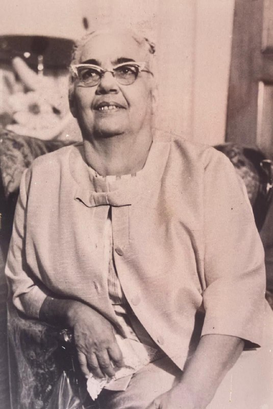
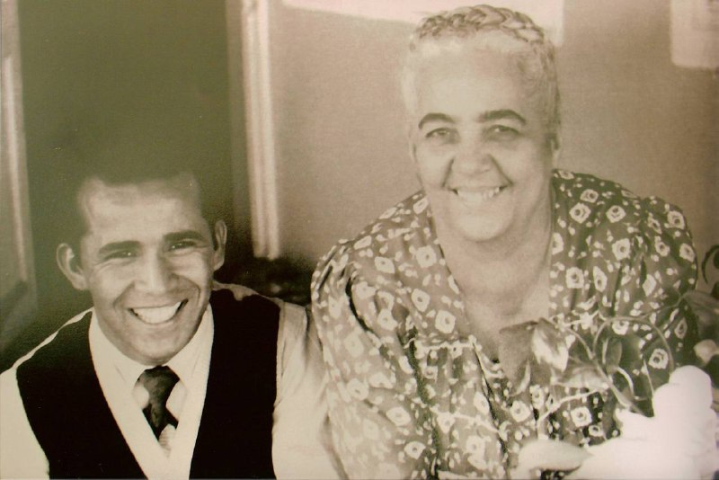
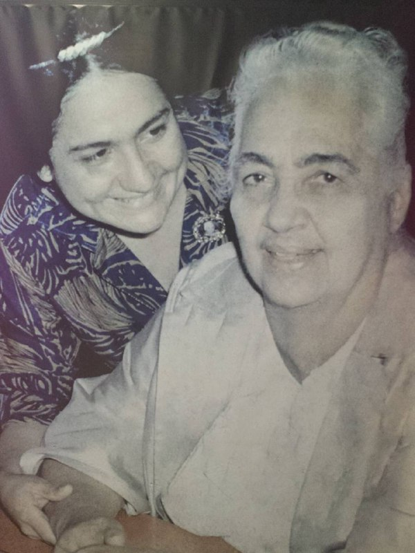
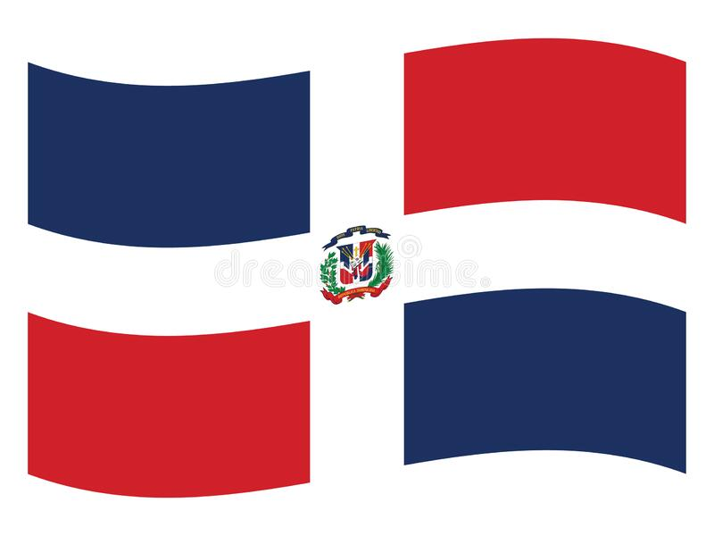
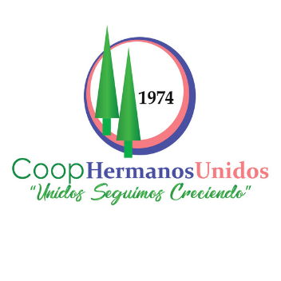
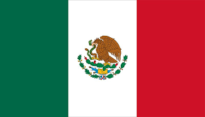
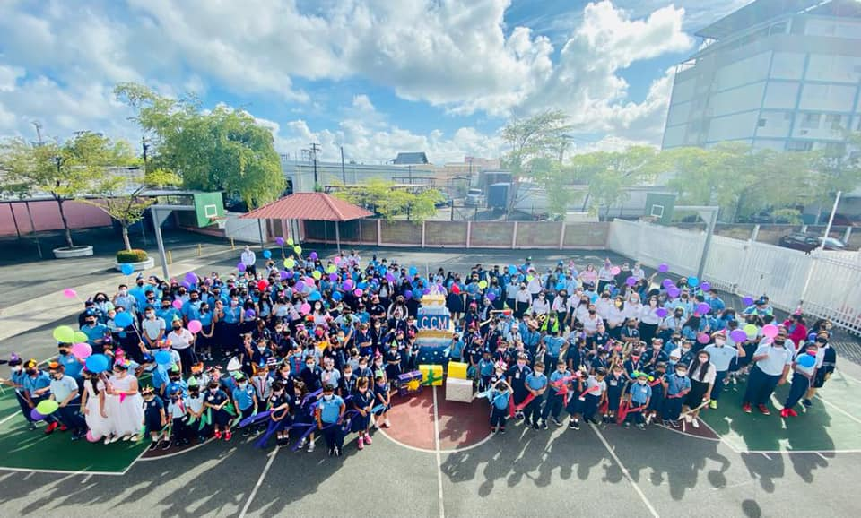
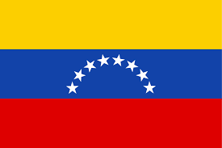
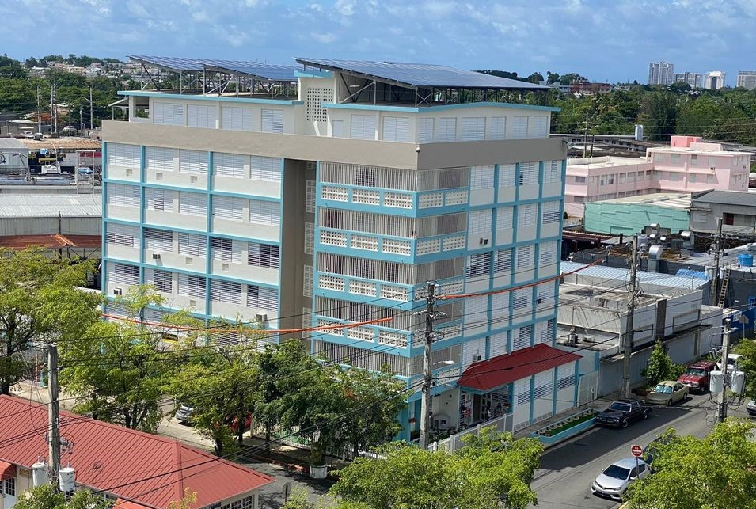
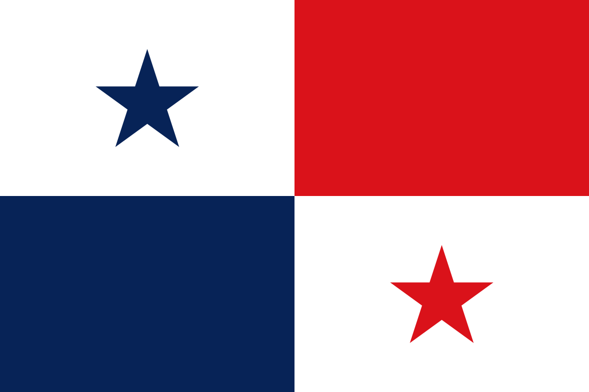

Nacimiento de Juanita García Peraza
24 de junio de 1897

Nacimiento de Aarón
23 de octubre de 1921

Nacimiento de Rosinín
18 de octubre de 1937

Surge la Congregación Mita en Arecibo, Puerto Rico con 11 hermanos.
1940
Inauguración del primer templo ubicado en el sector Las Monjas en San Juan, Puerto Rico.
11 de enero de 1943
Se traslada la sede de la Congregación desde Arecibo hasta Hato Rey, Puerto Rico. Se establece el Cuerpo de Guardas.
1947
Llega la Congregación Mita a Nueva York.
1948
Se establece la Agrupación de Cuerdas.
1950
Se adquiere la finca El Paraíso.
1951
Se establece la Banda de Mita.
1956
Rosinín conoce la Obra de Mita
1962
Llega la Congregación Mita a República Dominicana.
1963

La Banda de Mita participa en el Desfile Puertorriqueño en la ciudad de Nueva York.
1969
Fallecimiento de Juanita García Peraza y Aarón asume el liderato de la Congregación. Llega la Obra de Mita a Colombia.
1970
Inauguración del Supermercado Plaza París
1973
Se funda la Cooperativa de Ahorro y Crédito Hermanos Unidos.
1974

Se adquiere la Finca de Bayamón.
1976
Llega la Congregación Mita a México.
1980

Se funda el Colegio Congregación Mita.
1981

Llega la Congregación Mita a Venezuela.
1982

Se establece la Égida e Institución El Paraíso. Se establece la Oficina de Orientación y Trabajo Social.
1985

Llega la Congregación Mita a Costa Rica. Se establece la Agrupación de Arpas. Se comienza a celebrar la Feria de Artesanías y Piezas de Molde.
1986
Llega la Congregación Mita a Panamá.
1987

La Banda de Mita gana el premio presidente en una competencia de bandas en San Juan, Puerto Rico.
1988
Celebración del quincuagésimo aniversario de la Congregación Mita e inauguración del Templo Nuevo. Se establece la Corporación Los Hermanos. Se establece la Panadería y repostería América. Se organiza el Coro de Mita.
1990
Llega la Congregación Mita a Canadá.
1991
La Banda de Mita es invitada por el gobierno de Puerto Rico para participar en la conmemoración de los 500 años del Descubrimiento de América en Sevilla, España (Expo-92).
1992
Llega la Congregación Mita a El Salvador.
1993
Llega la Congregación Mita a España.
2003
Se inaugura el Centro de Salud Dr. Luis Daniel Silva.
2007
Se inaugura Los Hermanos Memorial Park.
2010
Aarón nombra a Rosinín «madre espiritual».
2012
La Banda de Mita participa en un desfile en el parque Magic Kingdom en Walt Disney World.
2018
Fallecimiento de Aarón y Rosinín asume el liderato de la Congregación.
2021
{kind=link}
{kind=link}
{kind=link}
{kind=link}
{kind=link}
{kind=link}
{kind=link}
{kind=link}
{kind=link}
{kind=link}
{kind=link}